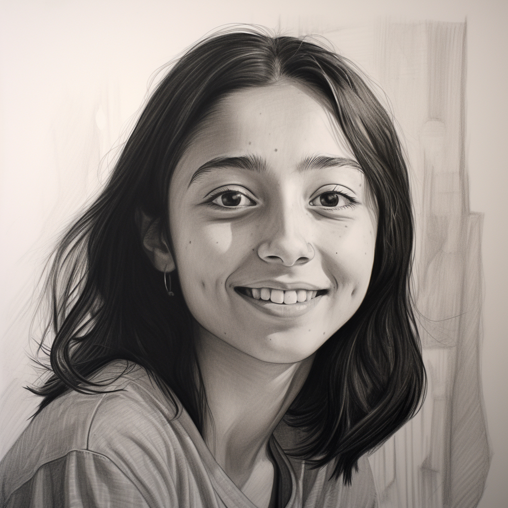
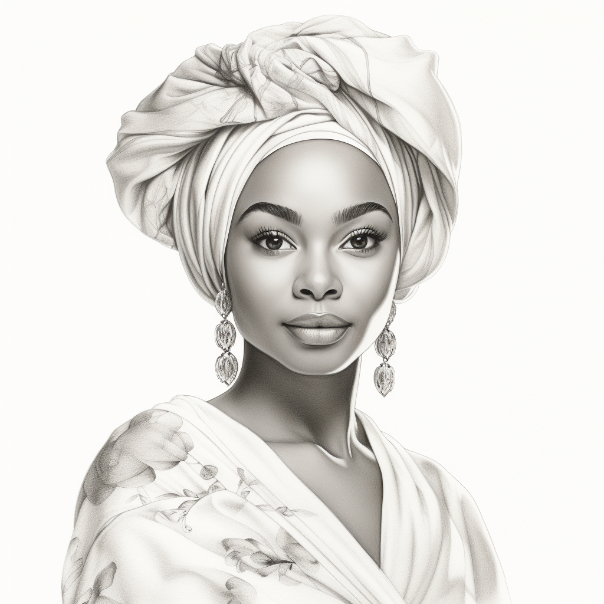
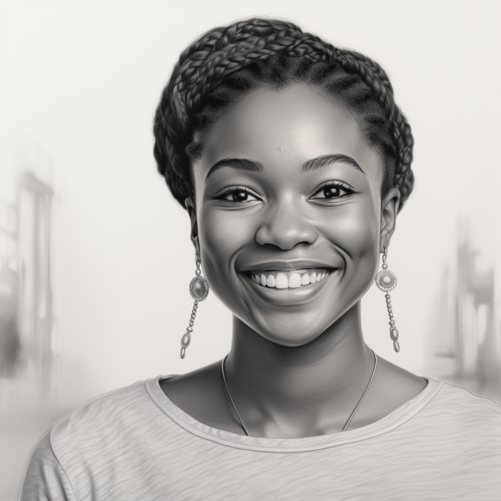
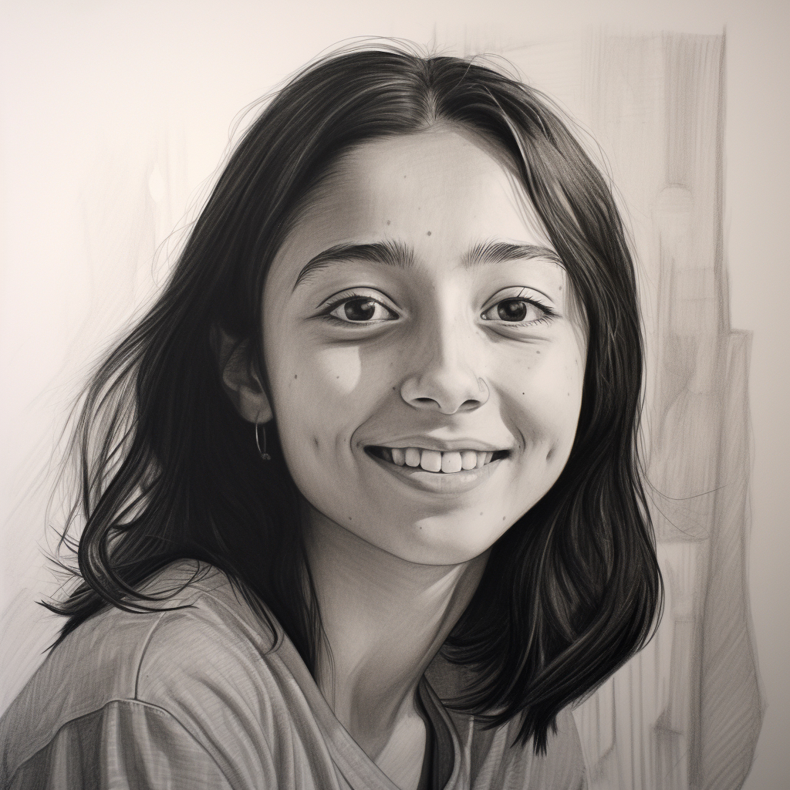
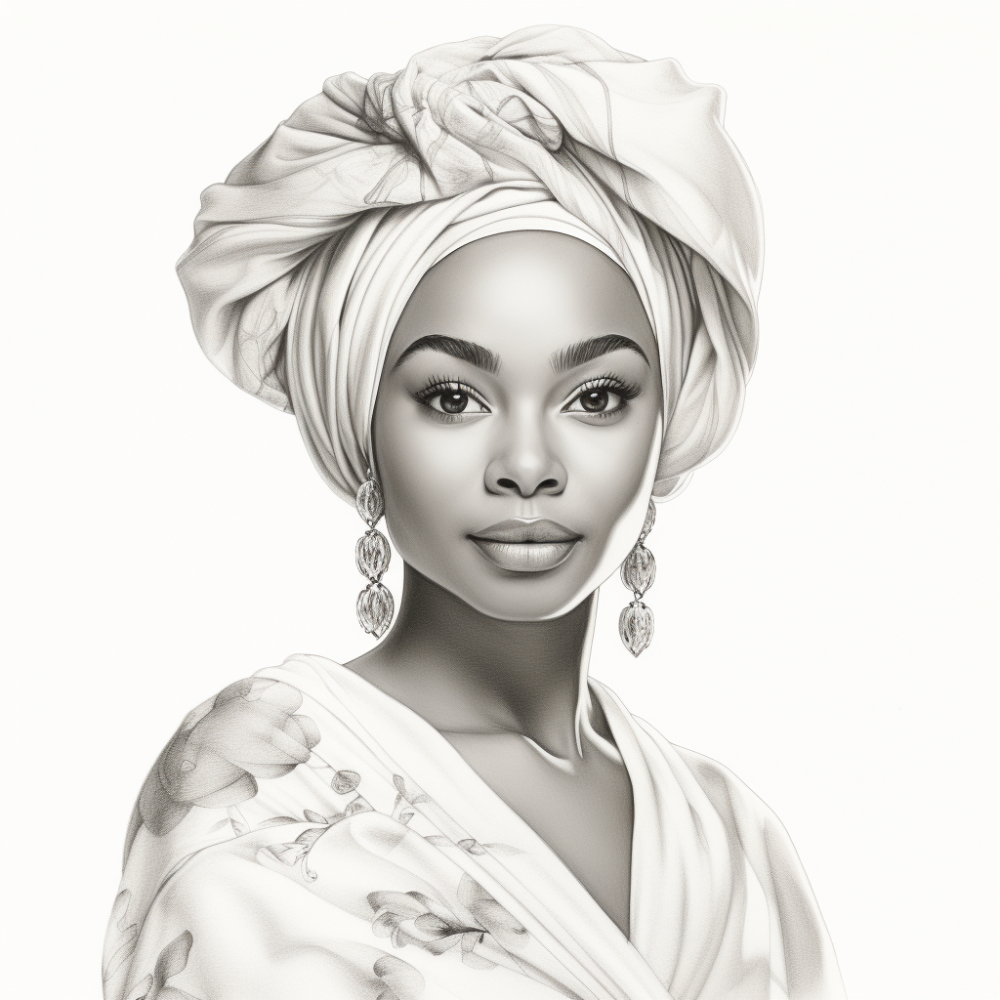
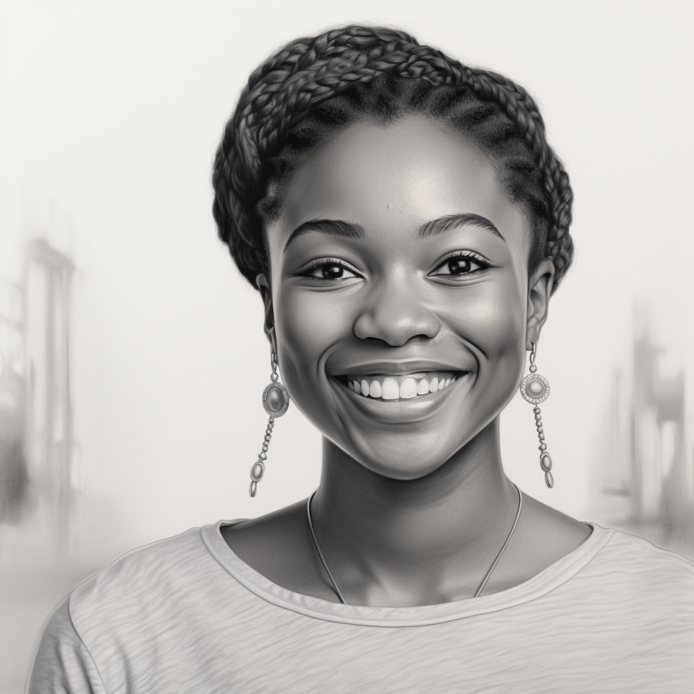

Introduction
In this assignment, we reflected on the interviews with each other and learned about our backgrounds, interests, and goals. We also discussed the challenges and issues we faced while completing the assignment, such as time management, communication, collaboration, etc.
About Avangelina Cazares
Hello, my name is Avangelina Cazares and the class may also refer to me as Ava. I am a graduate student and this is my 1st year at UW Madison. I have previous coding experience so this is not my first course.
The 1st assignment was easy and completed with Karen, but I think there was some communication difficulties as new members joined the group. I was with J’Khayla and she dropped the course, and now Ahmed is my partner. We are using Microsoft Teams to complete this assignment and to interview each other.
I look forward to the class and working on more coding projects throughout the course.
About Ahmed Tariq
I am Ahmed Abdullah Tariq, but you can all call me AT, everyone does. I am a second year graduate student in MS Information Science and I took this course at the last minute.
Joining this course last minute was stressful in the beginning. There was so much content/work/information to catch up on that I was constantly behind. I still am. Taking an online course like this is a new experience for me.
I spent the first week or so bouncing around groups until I was added to the graduate group. Still lost, still confused. But the folks over in group 1 (please correct me if I got the group number wrong) really helped me get the gist of things. It was during one of those discussions when Avangelina reached out to me for making a group for assignment 2. We switched from canvas to talking on teams and that is how I joined this merry crew.
Website Design
The website is ready for PHP integration with Google Firebase
Project Console: https://console.firebase.google.com/project/women-tech-heros-website/overview
Hosting URL: https://women-tech-heros-website.web.app
- index.html: This is the main HTML file that defines the title page of the website. It contains the introduction, the links to the tech hero pages, and some images related to the tech heroes.
- ada.html: This is the HTML file that defines the Ada Lovelace page of the website. It contains the background, contributions, challenges, and quotes of Ada Lovelace.
- arfa.html: This is the HTML file that defines the Arfa Karim page of the website. It contains the background, contributions, challenges, and quotes of Arfa Karim.
- safiya.html: This is the HTML file that defines the Safiya Umoja Noble page of the website. It contains the background, contributions, challenges, and quotes of Safiya Umoja Noble.
- joy.html: This is the HTML file that defines the Joy Buolamwini page of the website. It contains the background, contributions, challenges, and quotes of Joy Buolamwini.
- style.css: This is the CSS file that defines the style and format of the website. The Pantone Color of the Year 2023, Viva Magenta HEX BE3455. It is a color ingrained in nature, descended from the red family, and symbolic of a new strength. It creates a simple and elegant design for the website, using a white background, a magenta color scheme, a sans-serif font, and some margins and paddings. It also makes the website responsive, using media queries, flexbox, and grid to adjust the layout and elements according to different screen sizes and resolutions.
- script.js: This is the JavaScript file that defines the functionality and interactivity of the website. It adds some simple features to the website, such as changing the background color of the header when the user clicks on it, displaying a random quote from one of the tech heroes when the user clicks on a button, and validating the user input in a form when the user submits it.
- index.php: This is the PHP file that defines the server-side logic and data processing of the website. It connects to a MYSQL database that stores some information about the tech heroes, such as their names, birth dates, and achievements. It also displays this information on the website using PHP echo statements and HTML tags.
- images: This is a folder that contains all of the images that are used for the website. The images are named as follows:
- ada.jpg: This is an image of Ada Lovelace’s portrait.
- arfa.jpg: This is an image of Arfa Karim portrait.
- safiya.jpg: This is an image of Safiya Umoja Noble’s portrait.
- joy.jpg: This is an image of Joy Buolamwini’s portrait.
Women Tech Heros
The purpose of this assignment is to explore the history and impact of three tech heroes who have made significant contributions to computer science and society. We chose these tech heroes because they inspire us with their vision, creativity, and courage. Our women tech heros are:
- Ada Lovelace, the first computer programmer and visionary of computing.
- Arfa Karim, the youngest Microsoft certified professional and pride of Pakistan.
- Safiya Umoja Noble, a leading scholar and activist on algorithmic bias and justice.
- Joy Buolamwini, a computer scientist and digital activist who exposes facial recognition systems' discrimination.
Here are some images related to our women tech heroes; Ada Lovelace (left) Arfa Karim (middle) Safiya Umoja Noble (right) Joy Buolamwini (bottom) that were created using Midjourney:
 




